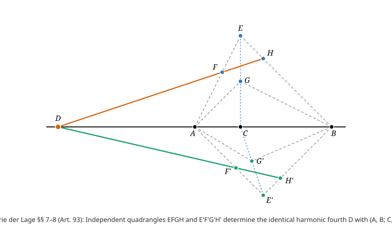
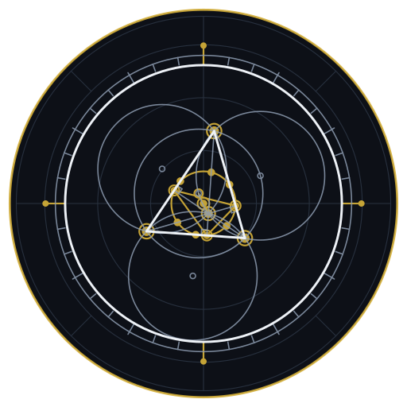

II. The Unfolding Canon (The Elementrium & Constructive Geometry)¶
Classical Synthesis, Conics, Spherical & Projective Geometry, Triangle Centers & Rational Trigonometry
Pillar II recasts foundational mathematical treatises and modern synthetic canons into interactive Book Codices (for public-domain treatises) and Mathematical Catalogs (for modern research archives), where historical prose, formal pseudocode, exact SymPy proofs, and vector diagrams illuminate one another.
euclid — Euclid’s Elements (Books I–XIII) & Data (Δεδομένα)¶
Live Book Codex: geometor.github.io/euclid (Euclid’s Data)
Repository: github.com/geometor/euclid
Complete three-volume critical digital edition of Sir Thomas L. Heath’s Euclid’s Elements (1,416 archival folios, 465 propositions, 831 calibrated interactive SVGs in a 2-Track Codex), paired with a 4-Track Greek/English Book Codex of Euclid’s companion treatise on geometric analysis, the Data (Δεδομένα, 94 propositions grounded in Heiberg/Menge Teubner editions).
elements — Elements 2.0 & The 601-Node G-Index¶
Live Book Codex: geometor.github.io/elements
Repository: github.com/geometor/elements · Broadcasts: YouTube Playlist
Codifies Euclid’s logical dependency DAG into the sequential G-Index (G.1 through G.601), ensuring no definition, postulate, common notion, or proposition is invoked before its prerequisites are established across Formal Pseudocode, Executable Python, Heath Prose, and QHD Studio Broadcasts.
byrne — Oliver Byrne’s First Six Books of the Elements of Euclid (1847)¶
Live Book Codex: geometor.github.io/byrne
Repository: github.com/geometor/byrne
Scholarly edition analyzing Oliver Byrne’s celebrated 1847 William Pickering edition as visual geometric pseudocode: inline red, yellow, blue, and black line/angle/area glyphs eliminate letter-label indirection, cross-linked to Nicholas Rougeux’s digital typography study and GEOMETOR’s G-Index.
archimedes — Works of Archimedes & The Mechanical Method¶
Live Book Codex: geometor.github.io/archimedes
Repository: github.com/geometor/archimedes
Grounded in T. L. Heath’s 1897 and 1912 Cambridge editions: Measurement of a Circle (exact 96-gon rational bounds \(3\frac{10}{71} < \pi < 3\frac{1}{7}\)), Quadrature of the Parabola, On Spirals, On the Sphere and Cylinder, the Book of Lemmas (Arbelos & Salinon), and The Method of Mechanical Theorems.
apollonius — Apollonius of Perga’s Treatise on Conic Sections¶
Live Book Codex: geometor.github.io/apollonius
Repository: github.com/geometor/apollonius
Book Codex of Heath’s 1896 edition spanning Books I–VII on the symptomata of parabola, ellipse, and hyperbola cut from a single oblique circular cone, conjugate diameters, harmonic poles and polars, normals/evolutes, minimum and maximum lines, and Pappus reconstructions of Apollonius’s lost analytical treatises.
heron — Heron of Alexandria’s Metrica & Dioptra¶
Live Book Codex: geometor.github.io/heron
Repository: github.com/geometor/heron
4-Track Greek/English Codex (Schöne 1903 Teubner critical text + original English) of Metrica Books I–III: Heron’s Area Formula (\(\Delta = \sqrt{s(s-a)(s-b)(s-c)}\), identical to Rational Trigonometry’s Archimedes/Quadrea formula), iterative rational square-root extraction, regular polygons, Platonic/Archimedean solid volumes, and proportional division of figures.
menelaus — Menelaus of Alexandria’s Sphaerica¶
Live Book Codex: geometor.github.io/menelaus
Repository: github.com/geometor/menelaus
Multi-track edition of Books I–III of Menelaus’s Sphaerica: intrinsic geometry of spherical triangles without Euclid’s parallel postulate (AAA congruence), Menelaus’s Planar & Spherical Transversal Theorems (signed 6-segment ratio product \(= -1\)), and projective cross-ratio invariance.
ptolemy — Claudius Ptolemy’s Almagest (Book I) & Planisphaerium¶
Live Book Codex: geometor.github.io/ptolemy
Repository: github.com/geometor/ptolemy

4-Track Greek/Latin/English Codex (Heiberg 1898/1907 Teubner editions + original English): Ptolemy’s single-circle Golden Pentagon–Decagon construction (Almagest I.10), Ptolemy’s Theorem on Cyclic Quadrilaterals, exact radical & sexagesimal chord tables, spherical Menelaus astronomy, and stereographic projection of the astrolabe (Planisphaerium).
pappus — Pappus of Alexandria’s Synagoge (Collection)¶
Live Book Codex: geometor.github.io/pappus (Synagoge · Theorems)
Repository: github.com/geometor/pappus
4-Track Greek/English Book Codex of Pappus’s Synagoge (Hultsch 1876–1878, 445 folios): Book III Three Means in a Semicircle, Book IV Generalized Pythagoras & Arbelos Circle Chain \(h_n = n d_n\), Book V Honeycomb Isoperimetry, Book VII Domain of Analysis, Cross-Ratio & Hexagon Lemma, and Book VIII Mechanics, paired with exact SymPy projective configurations.
pascal — Blaise Pascal’s Essay pour les Coniques (1640)¶
Live Book Codex: geometor.github.io/pascal (Essay pour les Coniques)
Repository: github.com/geometor/pascal
4-Track French/English Book Codex of Pascal’s 1640 Paris broadside generalizing Pappus’s hexagon theorem to any six points inscribed on a conic section, accompanied by exact symbolic verification of the 60 Pascal lines, 20 Steiner points, and 60 Kirkman points of the Hexagrammum Mysticum.
ceva — Giovanni Ceva’s De lineis rectis se invicem secantibus statica constructio (1678)¶
Live Book Codex: geometor.github.io/ceva
Repository: github.com/geometor/ceva

4-Track Latin/English Codex (126 folios) of Ceva’s 1678 Milan quarto treatise elevating Archimedes’ Law of the Lever into a universal engine of projective concurrency: Ceva’s Theorem for interior and exterior cevians (\(X_1, X_2, X_4, X_6, X_7, X_8\)), static rediscovery of Menelaus’s Theorem, odd-polygon ratio products, and 4-weight 3D tetrahedron concurrency.
euler — Leonhard Euler’s Solutio facilis (E325, 1765)¶
Live Book Codex: geometor.github.io/euler (Solutio facilis)
Repository: github.com/geometor/euler
4-Track Latin/English Codex (38 folios from the Novi Commentarii Academiae Scientiarum Imperialis Petropolitanae) deriving the exact algebraic quadrances between orthocenter, centroid, circumcenter, and incenter—proving the \(2:1\) collinearity of the Euler Line (\(X_4, X_2, X_3\)) and Euler’s Incenter–Circumcenter Theorem \(OI^2 = R^2 - 2Rr\).
mascheroni — Lorenzo Mascheroni’s La Geometria del Compasso (1797)¶
Live Book Codex: geometor.github.io/mascheroni (La Geometria del Compasso)
Repository: github.com/geometor/mascheroni
4-Track Italian/English Codex (181 folios, Pavia 1797) proving the Mohr–Mascheroni Theorem: every compass-and-straightedge construction of Euclidean geometry—including circle bisection, regular polygon division, and line-circle/line-line intersection—can be executed with the compass alone.
feuerbach — Karl Wilhelm Feuerbach’s Eigenschaften (1822)¶
Live Book Codex: geometor.github.io/feuerbach (Eigenschaften)
Repository: github.com/geometor/feuerbach
4-Track German/English Codex (76 folios, Nuremberg 1822) proving that the Nine-Point Circle (center \(X_5\), radius \(R/2\)) touches the incircle internally at Feuerbach’s Point (:math:`X_{11}`) and all three excircles externally.
steiner — Jakob Steiner’s Die geometrischen Constructionen (1833)¶
Live Book Codex: geometor.github.io/steiner (Die geometrischen Constructionen)
Repository: github.com/geometor/steiner
4-Track German/English Codex (94 folios, Berlin 1833 / Ostwald’s Klassiker 1895) proving the Poncelet–Steiner Theorem: given a single fixed circle and its center drawn once on the plane, every Euclidean construction can be performed with the unmarked straightedge alone via harmonic ranges and polarities.
staudt — Karl Georg Christian von Staudt’s Geometrie der Lage (1847) & Beiträge (1856–60)¶
Live Book Codex: geometor.github.io/staudt
Repository: github.com/geometor/staudt

Bilingual German/English Codex emancipating projective geometry from metric distance: Möbius harmonic nets, harmonic fourths by straightedge alone, von Staudt’s Algebra of Throws (*Würfe*) adding and multiplying collinear points projectively, conic polarities, and his projective construction of the regular 17-gon.
petersen — Julius Petersen’s Methods and Theories for Geometrical Constructions (1879)¶
Live Book Codex: geometor.github.io/petersen
Repository: github.com/geometor/petersen

Systematic Book Codex of Petersen’s classic heuristic treatise: solving constructive problems via intersection of two loci (culminating in Gergonne/Petersen’s solution to Apollonius’s Problem of three tangent circles), parallel translation, rotation/spiral similarity, homothety, and circular inversion.
casey — John Casey’s A Sequel to the First Six Books of the Elements of Euclid (1888)¶
Live Book Codex: geometor.github.io/casey
Repository: github.com/geometor/casey

Bridges Euclid Books I–VI to nineteenth-century circle and triangle synthesis: coaxial circles, inversion, Casey’s Generalized Ptolemy Theorem on four circles tangent to a fifth (\(t_{12}t_{34} \pm t_{13}t_{24} \pm t_{14}t_{23} = 0\), yielding an immediate algebraic proof of Feuerbach’s Theorem), and Lemoine–Brocard–Neuberg geometry.
lemoine — Émile Lemoine’s Géométrographie, ou Art des constructions géométriques (1902)¶
Live Book Codex: geometor.github.io/lemoine
Repository: github.com/geometor/lemoine
Bilingual French/English Codex of Lemoine’s operational complexity calculus counting five elementary ruler-and-compass primitives (\(R_1, R_2, C_1, C_2, C_3\)) to measure Simplicity (\(S\)) and Exactness (\(E\)) across classical constructions, paired with Lemoine’s Symmedian Point (:math:`X_6`) and Lemoine circles.
klein — Felix Klein’s Erlangen Program (1872) & Famous Problems of Elementary Geometry (1895)¶
Live Book Codex: geometor.github.io/klein
Repository: github.com/geometor/klein

Dual German/English Codex uniting Klein’s 1872 Erlangen Program (classifying Euclidean, affine, projective, and hyperbolic geometries as invariants of transformation groups) with his 1895 Göttingen lectures proving the impossibility of cube duplication and angle trisection, Gauss’s Gaussian-period construction of the regular 17-gon, and Hermite–Lindemann transcendence of \(e\) and \(\pi\).
altshiller-court — Nathan Altshiller-Court’s College Geometry¶
Live Book Codex: geometor.github.io/altshiller-court
Repository: github.com/geometor/altshiller-court

One-item-per-page proposition codex with exact symbolic .euclid-graphic hero figures and calibrated diagrams across 10 chapters—training the four-stage constructive discipline (Analysis, Construction, Proof, Discussion) across geometric loci, similitude, the Nine-Point Circle and Feuerbach’s Theorem, the Simson Line, Menelaus and Ceva, Harmonic Division, Inversion, and Brocard geometry.
fundamentals — The Fred W. Seelig Constructive Archive¶
Live Book Codex: geometor.github.io/fundamentals
Repository: github.com/geometor/fundamentals
Preserves and executes the mathematical notebooks of Fred W. Seelig across 55 foundational topics (F.1–F.55), 353 manuscript folios, and 59 analytical spreadsheets in a 3-Track Codex.
etc — Catalog: Clark Kimberling’s Encyclopedia of Triangle Centers¶
Live Mathematical Catalog: geometor.github.io/etc
Repository: github.com/geometor/etc · Broadcasts: YouTube Playlist

Symbolic Catalog documenting Clark Kimberling’s Encyclopedia of Triangle Centers (53,144 centers parsed; 4,000+ centers compiled across 62 collections with 16,000+ interactive SVGs) evaluated across Acute (5, 6, 7), Egyptian Right (3, 4, 5), Kepler Golden Right (1, √φ, φ), and Kimberling Scalene (6, 9, 13) triangles.
gibert — Catalog: Bernard Gibert’s Catalogue of Triangle Cubics¶
Live Mathematical Catalog: geometor.github.io/gibert
Repository: github.com/geometor/gibert
Symbolic Catalog modeling Bernard Gibert’s Catalogue of Triangle Cubics (CTC) in exact SymPy algebra, linking barycentric cubic loci and triangle center concurrences directly to the historical treatises of GEOMETOR.
wildberger — Catalog: Divine Proportions & Rational Trigonometry¶
Live Mathematical Catalog: geometor.github.io/wildberger
Repository: github.com/geometor/wildberger
Constructive symbolic Catalog companion to Norman J. Wildberger’s Divine Proportions: Rational Trigonometry to Universal Geometry (2005), featuring exact SymPy proofs and geometor.model constructions for Quadrance, Spread, the five fundamental laws, pentagonal/golden Spread Polynomials, and Chromogeometry.